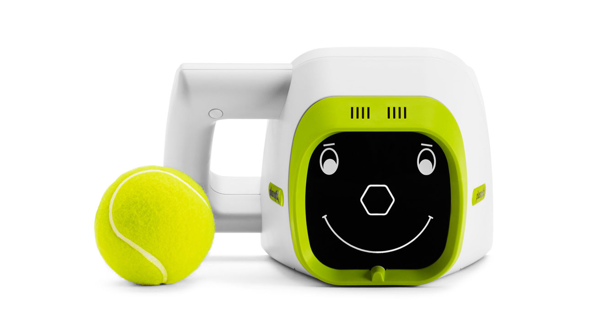

Matériel spécifique d'examen pédiatrique

- Le Retino Max est un refracteur automatique, conçu pour être adapté au enfant. Il permet un examen rapide et non invasif. Les données récoltées sont précises même avec une coopération limitée.